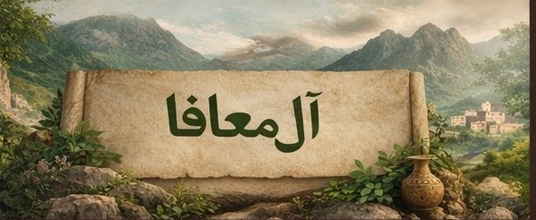
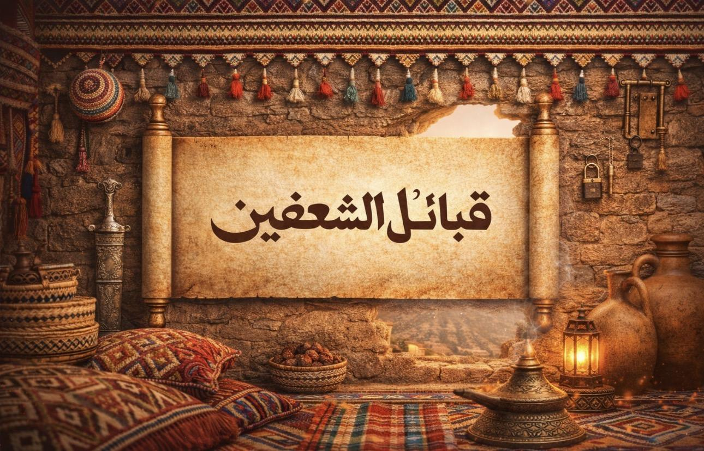
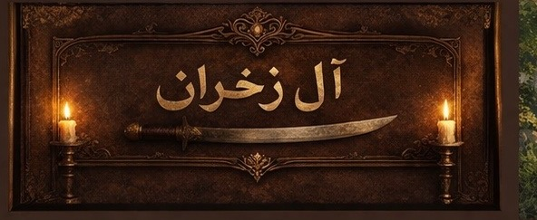
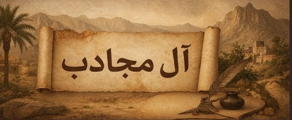
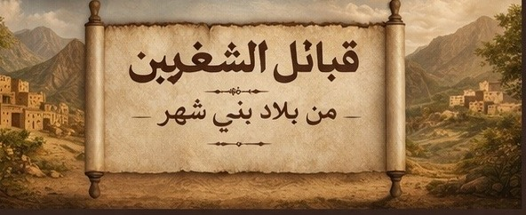
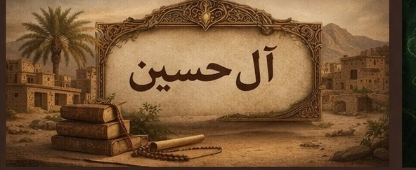
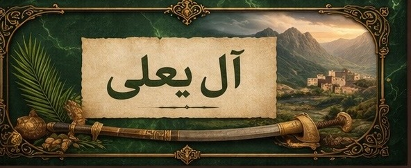

آل معافا
من قبائل الشعفين، ومواطنهم بالشعف وعلى الطريق المؤدي إلى الأربوعة وعقبة برمة.
الدخول إلى صفحة آل معافا
من هذه الصفحة يبدأ الدخول إلى صفحات القبائل. لكل قبيلة صفحتها الخاصة، وداخلها أقسام مستقلة لشجرة العائلة، والفرسان، والشعراء، والمؤثرين، وما يتصل بها من مواد وصور لاحقًا.

من قبائل الشعفين، ومواطنهم بالشعف وعلى الطريق المؤدي إلى الأربوعة وعقبة برمة.
الدخول إلى صفحة آل معافا
من قبائل الشعفين، وتقع قراهم في الشعف والأربوعة، ولهم حضور معروف في المواضع الجبلية المطلة على تهامة.
الدخول إلى صفحة آل مروح
من قبائل الشعفين، ومنهم آل السيارة وآل الوادي، وترتبط بهم عدة قرى ومواضع معروفة في منعاء وما حولها.
الدخول إلى صفحة آل مجادب
من قبائل الشعفين، ومن قراهم ظرفان وآل زخران وآل قاصلة، ويرتبط اسمهم بعدد من الأعلام والمرويات.
الدخول إلى صفحة آل زخران
من قبائل الشعفين، ولهم موضع معروف داخل تقسيم القبيلة، وتُخصّص لهم هذه الصفحة للتوثيق والتوسعة لاحقًا.
الدخول إلى صفحة آل صفوان
من قبائل الشعفين، ومن قراهم لقبال والبطن وعتمة وترتع، وتُمهّد هذه الصفحة لإضافة التفاصيل لاحقًا.
الدخول إلى صفحة آل محدل
من قبائل الشعفين، ومن قراهم قرية آل حسين وقرية السبت، ولهم حضور اجتماعي معروف في تنومة.
الدخول إلى صفحة آل حسين
من قبائل الشعفين، ومن قراهم آل مرحب وآل حزيبر والسوق، ويعود فيهم آل الشبيلي.
الدخول إلى صفحة آل يعلى
من القبائل المتحالفة مع الشعفين، ولهم قرية العطف بمنعاء، ويتبعون في المشيخة آل العريف من آل يعلى.
الدخول إلى صفحة آل رزيق